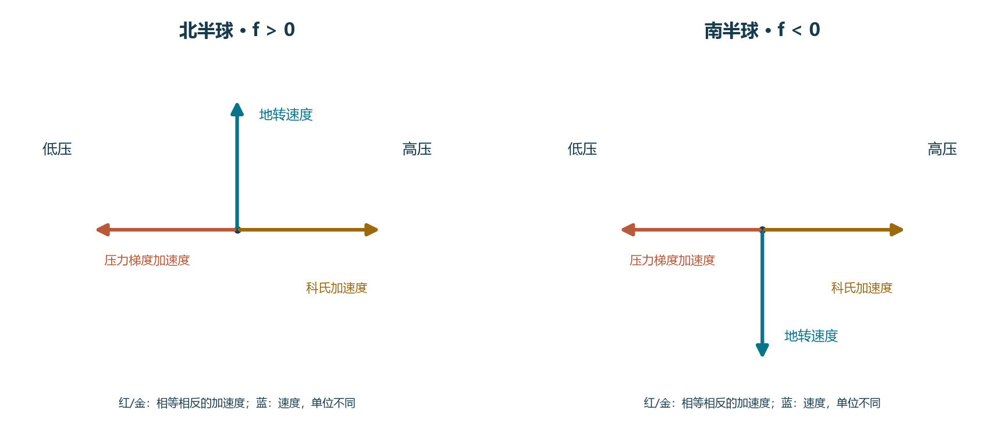
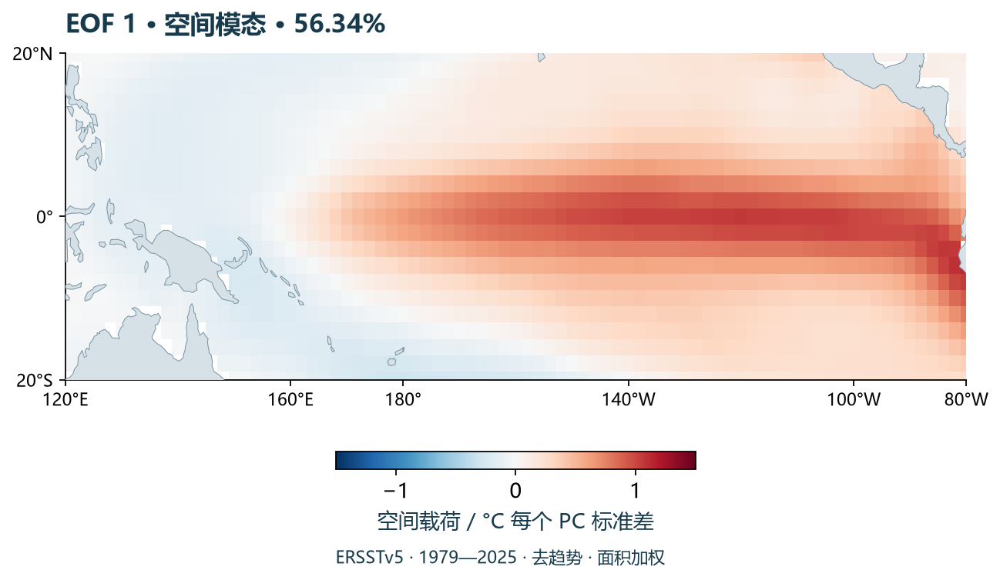

课堂笔记｜八讲
按课次列（8 次主讲课，课程日历 9.17–11.05）：9.17 导论、9.24 海盆、10.08 海水物性、10.15 水文分布、10.22 收支、10.29 动力过程、10.30 线上模块 2（波动/潮汐）、11.05 数据分析。每讲保留“课堂内容 → 我自己的话 → 当时的疑问 → 出门票”四块；第 6–8 讲的教材章号分别是 Ch.7、Ch.8、Ch.6，和你看到的课本顺序不完全一样，这是课程日历的安排。
描述性物理海洋学是什么
驱动问题：海洋是一种不断运动的流体——我们怎样描述它，地球自转又在什么时候开始管事？
课堂内容
描述性物理海洋学从观测和模式输出出发，尽可能定量地描述海水的运动与性质；动力物理海洋学则用理论和过程实验解释背后的机制。先回答“在哪里、多少、怎样变化”，再问“为什么”。
海洋现象跨越多达十个数量级的空间尺度（1 mm–10,000 km）和时间尺度（秒–千年）。同一套观测方案不可能同时分辨海浪和气候，平均间隔本身就是科学定义的一部分。
判断自转是否重要，先算 Rossby 数 Ro=U/(fL)。大洋环流 Ro~10⁻³，地转近似很好；赤道、边界层和强摩擦处要重新检查。
- 描述不等于没有动力学；描述是动力学解释的起点。
- 读图五问：变量与单位、时间窗、空间范围、数据来源、误差与缺测。
- 数据来源：现场观测、卫星遥感、历史资料与模式再分析。
我自己的话
我原以为物理海洋学一上来就是讲海流和方程，后来发现第一节课先教的是“怎样描述”：先问在哪里、多少、怎样变化，再问为什么。老师把 1 mm 到 10,000 km 的尺度图放在一页上，我第一次意识到：同一套近似不能同时解释海浪和气候。
❓ 当时的疑问 + ✅ 后来怎么想通
❓ 我当时没懂：为什么 Rossby 数小就一定能用地转近似？
✅ 后来想通：Ro 小只说明旋转主导、平流项相对小；还要看时间尺度、摩擦和边界层。地转是“主平衡”，不是“没有加速度”。
🎫 出门票
题目：要研究约 6 小时的海温变化，仅有逐日平均数据是否足够？
先自己想，再展开参考答案
我的回答：不够。日平均会把日内信号削弱甚至混叠掉；应改用明显短于 6 小时的采样（如小时级），并检查仪器响应、连续覆盖与缺测。
这张票把我带到第2讲：先确认观测尺度，再谈海底地形怎样约束水的去路。
海盆、海峡与地形
驱动问题：为什么海底地形不能只当作海流地图的背景？
课堂内容
海洋覆盖约 71% 的地球表面，平均深度约 3734 m；陆地平均海拔只有约 840 m。最深的马里亚纳海沟约 11,000 m。
大陆架—大陆坡—大陆隆—深海平原—洋中脊—海沟，这些形态由板块活动和沉积塑造，也决定不同深度的水能否直接交换。
海槛像门槛：它限制深层通道，但不是封闭墙。越槛的密水可以在混合后继续下沉，也可能停在较浅层；深盆水是否更新，要看密度差、输运和混合。
- 海盆、海岭与通道共同决定连通关系。
- 图上有网格，不等于每个格点都有直接测深。
- 测深手段：船载声学、卫星重力、GEBCO/ETOPO 网格。
我自己的话
我原以为海底地形只是海流图的背景，后来发现海槛、海峡和海岭会直接决定哪一层水能进来。把 4000 m 的盆地和 800 m 的海槛放在一起看，“深”不等于“封闭”。
❓ 当时的疑问 + ✅ 后来怎么想通
❓ 我当时没懂：海槛只有 800 m，4000 m 的深水是不是永远不更新？
✅ 后来想通：越槛水只要混合后仍比盆地水密，就能沿坡下沉；更新强弱取决于密度差、输运和混合，不是两个深度数字。
🎫 出门票
题目：想判断海岭两侧的深层水是否相通，应优先补查哪三类信息？
先自己想，再展开参考答案
我的回答：第一，通道及海槛的深度与宽度；第二，两侧水体的温盐和密度结构；第三，通道流速或输运及其变化。仅看海面地图或盆地最大深度不够。
下一讲从“水在哪里”转到“水是什么”：温度、盐度和密度。
本讲来源：Elsevier · 章节目录 · GEBCO · 海底地形网格
海水的物理性质
驱动问题：比较两团海水的轻重，为什么不能只看温度？
课堂内容
密度由温度、盐度和压力共同决定，关系非线性。通常升温减密、增盐增密、加压压缩；“冷水一定重”不是无条件结论。
深水的现场温度含绝热压缩效应；位温把水团假想绝热移到同一参考压力。位密度也要注明参考压力。
TEOS-10 区分实用盐度 SP（电导率、无量纲）和绝对盐度 SA（常用 g/kg）；名字相似，不能在程序里随意互换。判断层结看水团被推开后能否回来：N²=−(g/ρ₀)∂ρ/∂z。
- Cabbeling：两个同密度但温盐不同的水团混合后密度更大。
- 双扩散/盐指：热量扩散比盐分快，形成细长盐指。
- SOFAR 通道：约 1000 m 声速最小，声波可传数千公里。
我自己的话
我原以为冷水一定比暖水重，后来发现盐度可以把结论翻过来：较淡的冷水可能比高盐暖水轻。位温、位密度还要注明参考压力，否则两个数根本不能直接比。
❓ 当时的疑问 + ✅ 后来怎么想通
❓ 我当时没懂：现场密度随深度增加，不就说明层结稳定吗？
✅ 后来想通：压力压缩也会让密度向下增加；判断稳定性要用位密度或 N²，看水团被推开后能不能回来。
🎫 出门票
题目：同一压力下，Δρ/ρ₀≈−αΔT+βΔSA。取 α=2×10⁻⁴ K⁻¹、β=8×10⁻⁴ (g/kg)⁻¹，升温 2 K、增盐 0.5 g/kg，密度一阶变化是多少？
先自己想，再展开参考答案
我的回答：−2×10⁻⁴×2 + 8×10⁻⁴×0.5 = −4×10⁻⁴ + 4×10⁻⁴ = 0。两个一阶效应抵消；这是固定系数的教学近似，不代表完整非线性状态方程给出绝对相同的密度。
下一讲把温盐放到真实剖面上，看水团和层结。
本讲来源：TEOS-10 · 热力学定义 · Talley · 海水性质讲义
典型分布与水团
驱动问题：温盐剖面中的极值、斜坡与层次，分别能说明什么？
课堂内容
全球海洋平均温度约 3.5°C、平均盐度约 34.6；四分之三的体积落在 0–6°C、34–35 之间。
典型副热带剖面：上层混合层、温跃层、较冷深层。它是比较框架，不是所有海区全年固定的模板；副极地和极地可能由盐度主导层结。
T-S 图把温度和盐度同时比较：一个点是一种水型，两个水团混合落在一条直线上，等密度线给出密度背景。水团识别不能只看单一极值，还要看温盐关系、密度层位、氧/营养盐、空间连续性和通道。
- AABW：南极陆架，约 −0.5°C、34.7。
- NADW：挪威海/拉布拉多海，约 2–4°C、34.9–35.0。
- AAIW：南极极锋以北，约 2–4°C、34.5–34.7。
我自己的话
我原以为 T-S 图只是把温度和盐度画成散点，后来发现它是水团的“指纹”：两个水团混合会落在一条直线上，盐度还能区分温度相近但来源不同的水。
❓ 当时的疑问 + ✅ 后来怎么想通
❓ 我当时没懂：副热带表层盐度最高，为什么不是蒸发最强的赤道？
✅ 后来想通：盐度看的是蒸发减降水（E-P），副热带降水少，净蒸发最大；赤道蒸发强但降水也强。
🎫 出门票
题目：两个站的同一中层都出现盐度极小值，能否直接认定它们属于同一来源水团？还应检查什么？
先自己想，再展开参考答案
我的回答：不能直接认定。应比较温盐关系、密度层位、氧或其他示踪量，并查看两站之间的连续分布与可能通道；相似的单一极值可能由不同混合过程形成。
下一讲把这套性质放进收支账本：先画控制体，再记账。
本讲来源：Talley · 典型分布 I · Talley · 典型分布 II
质量、盐与热收支
驱动问题：一片海变暖或变咸，怎样判断是当地强迫还是海流输送造成的？
课堂内容
收支先选控制体、边界和正方向：储存变化 = 净输入 + 内部源汇。体积输运是流速在断面上的积分，不能用表层速度代表全深度。
海表热交换四项：短波 Qs、长波 Qb、潜热 Qe、感热 Qh。规定进入海洋为正时，蒸发潜热通常是负项。
混合层温度还受平流、层底夹卷和混合影响；穿透层底的短波没有被本层全部吸收。忽略这些时，ρ₀cₚh dT/dt≈Q。淡水收支改变盐度和浮力；风应力输入动量，也能加深混合层。
- 先定义控制体、边界、单位和符号。
- 表面通量与边界输送都能改变储存量。
- 强风可能同时增大蒸发和加深混合层，最终温变要看各项大小。
我自己的话
我原以为热通量都是海洋给大气，后来发现短波是太阳给海洋，长波、潜热、感热通常是海洋向上损失；符号一错，整个账本都会反。
❓ 当时的疑问 + ✅ 后来怎么想通
❓ 我当时没懂：净热通量向下为正，为什么 SST 还会下降？
✅ 后来想通：表面加热只是其中一项，冷水平流、夹卷和混合层加深都能把热量摊薄或带走。
🎫 出门票
题目：20 m 均匀混合层吸收 100 W/m² 持续一天，忽略平流、夹卷和穿透短波。取 ρ₀=1025 kg/m³、cₚ=4000 J/(kg·K)，温升约多少？
先自己想，再展开参考答案
我的回答：ΔT = QΔt/(ρ₀cₚh) = 100×86400/(1025×4000×20) ≈ 0.105 K。若层深 100 m，其余不变，约 0.021 K。
下一讲把风加上来，看地转、Ekman 和位涡怎样组织大尺度环流。
动力过程：地转、Ekman 与位涡
驱动问题：为什么海流常沿着海面等高线走，而不是直接流向低处？
课堂内容
水平压强梯度先让海水加速，科氏力随速度增大并改变方向；在大尺度、低摩擦、缓变条件下两者近似平衡，形成地转流。取 x 向东、y 向北：u=−(g/f)η_y，v=(g/f)η_x。
密度水平差异通过静力关系改变不同深度的压强梯度，给出热成风切变；密度给相对速度，绝对速度还要参考层或观测约束。
风应力在表层驱动 Ekman 输运；风应力旋度通过 Ekman 层底的垂直运动让内区水柱伸缩，联系 Sverdrup 经向输运和西边界流。位涡 q=(ζ+f)/h 在理想单层、无摩擦、绝热条件下近似守恒。
- 科氏力永远垂直于运动方向，不做功。
- 表层 Ekman 流偏 45°，垂直积分后的净输送偏 90°。
- 西边界流（湾流、黑潮）参与闭合整体环流。

我自己的话
我原以为科氏力是一种真实的力，后来发现它只在旋转参考系里出现，而且永远垂直于运动方向、不做功；它改方向，不改速度大小。
❓ 当时的疑问 + ✅ 后来怎么想通
❓ 我当时没懂：为什么 Ekman 输送是垂直风向 90°，表层流却只偏 45°？
✅ 后来想通：45° 是表层流速；把整个 Ekman 层垂直积分，各深度偏转相互抵消，净输送才是 90°。
🎫 出门票
题目：30°N 海面向东升高 0.20 m、水平距离 100 km，南北方向无坡度。取 g=9.81 m/s²、f=7.292×10⁻⁵ s⁻¹，地转流向哪里、速度约多大？
先自己想，再展开参考答案
我的回答：ηx=2×10⁻⁶，u=0，v=gηx/f≈0.269 m/s，向北。压力梯度加速度向西，北向流在北半球的科氏加速度向东，二者平衡。
下一讲离开稳态平衡，看波动和潮汐怎样传播。
本讲来源：Talley · 扩展动力章 S7 · University of Hawai‘i · Sverdrup balance
波动、潮汐与沿岸
驱动问题：海浪、潮汐与河口环流，为什么需要不同的解释？
课堂内容
波动传播的是扰动和能量，水质点运动不等于波峰相速。表面重力波以重力为恢复力；深水/浅水由水深与波长之比决定。
线性、无旋转浅水长波：c≈√(gH)。这里的“浅水”是相对波长而言，不是海图上水深小。
稳定层结支持内波；潮汐主要受日月引潮力周期强迫，但实际潮差和潮流还受海盆形状、水深、旋转、摩擦与共振影响。河口常见淡水在上、咸水在下，但潮混合、径流和形状会改变层结。
- 区分相速、群速和水质点运动。
- 大潮与日月作用同相有关，不是“春天才有”。
- 单一时刻的流向不能代表长期净输运。
我自己的话
我原以为波峰向前跑，就是同一团水一路冲到岸边，后来发现小振幅波里水质点主要在原地转圈，波峰只是相位在传播；真正到岸的破碎和净漂移是另一层问题。
❓ 当时的疑问 + ✅ 后来怎么想通
❓ 我当时没懂：为什么 100 m 和 25 m 水深的同一长波，相速比是 2？
✅ 后来想通：浅水长波 c≈√(gH)，相速比 √(100/25)=2；“浅水”是相对波长，不是海图上水浅。
🎫 出门票
题目：同一长波在 100 m 与 25 m 水深区都满足线性浅水近似，忽略旋转、背景流和耗散，两处相速之比是多少？
先自己想，再展开参考答案
我的回答：c₁/c₂=√(100/25)=2。取 g=9.81 m/s²，分别约 31.3 和 15.7 m/s。这是波峰相速，不能直接当作净水流速度。
下一讲回到数据：怎样把观测变成可检查、可复算的结论。
本讲来源：Talley · 波浪讲义 · NOAA · 潮汐变化
数据分析与观测方法
驱动问题：一项海洋分析怎样做到别人能够理解、检查和重算？
课堂内容
分析从采样和质控开始：精密度是重复测量的离散程度，准确度是离真值有多近；数值平滑不代表没有系统偏差。采样不足会漏掉变化或产生混叠。
先检查单位、质量标识、传感器深度、缺测编码和采样间隔，再决定平均、滤波和绘图。EOF 把时空数据分解为空间模态（EOF）和时间系数（PC）：X=UΣVᵀ，方差比例 λᵢ/Σλ。
去季节、去趋势、面积加权和标准化会改变分析对象；报告有效样本、代码、误差和敏感性，结果才可复现。EOF 优化样本方差的重建效率，不检验因果机制。
- 相关不等于因果。
- EOF1 不是机制 1。
- 缺测处理会改变样本代表性。
我自己的话
我原以为 EOF1 解释 90% 方差，就等于解释了 90% 的物理原因，后来发现它只是在既定变量、区域、权重和预处理下，最能重建样本方差的空间模态；因果还要独立证据。
❓ 当时的疑问 + ✅ 后来怎么想通
❓ 我当时没懂：两个 EOF 一个去趋势、一个保留趋势，第一模态方差比例不同，是不是程序错了？
✅ 后来想通：预处理改变了输入矩阵和总方差，先统一范围、缺测、权重和标度，再做敏感性比较。
🎫 出门票
题目：比较两个 EOF 结果，一个先去趋势、另一个保留趋势，第一模态方差比例不同，能否据此判断程序算错？
先自己想，再展开参考答案
我的回答：不能。预处理改变了输入矩阵和总方差；应先统一时空范围、缺测规则、权重和标度，再检查 SVD 重建与数值误差。不同但明确的预处理可以作为敏感性比较。
八讲到这里闭环：从描述、性质、分布、收支、动力学、波动到数据分析，再回到可检验的问题。
教材笔记｜八章
参考 Talley, Pickard, Emery & Swift (2011), Descriptive Physical Oceanography: An Introduction, 6th ed.。每章给出一处教材原文（公式/图/数据），再写“我的解释 → 与课堂对照 → 我的延伸”；章号按教材，课堂讲次按实际上课时间，两边在每张卡片里互相标注。
描述性物理海洋学与尺度
时间尺度：秒 – 千年
教材第1章 §1.2，图1.2（海洋时空尺度）
我的解释
教材先用一张尺度图把海洋现象排开：波浪在秒—米级，潮汐在小时—百公里级，环流在年到千年、千公里级。读这张图的意义不是背范围，而是判断哪些项可以忽略、观测要多密。
🔗 与课堂对照
第1讲用 Ro=U/(fL) 把“尺度”变成可算的判据；教材给全景，课上给判据。差异：教材更强调描述传统，课上更强调“可检验的问题”。
📎 我的延伸
Talley 的 S7 补充材料；NOAA/NASA 的数据源目录。
海盆、海槛与测深
平均深度 3734 m · 陆地平均海拔 840 m
教材第2章 §2.2–2.9；GEBCO 网格的背景数据
我的解释
平均深度 3734 m、陆地平均海拔 840 m，说明海洋是一个薄薄的水层；海槛和海峡则决定这层水在不同深度能否连通。只看到盆地很深，不能推出其中保存着最冷或最古老的海水。
🔗 与课堂对照
第2讲把海槛和“深水更新”放在一起；教材补充了板块活动和测深方法。差异：教材讲地形怎么形成，课上讲地形怎么约束水。
📎 我的延伸
GEBCO 2024 网格、ETOPO 2022；船载多波束与卫星重力的约束不同。
海水状态方程与层结
∂p/∂z = −ρg
N² = −(g/ρ₀) ∂ρ/∂z
教材第3章 §3.2–3.5
我的解释
密度不是温度的单一函数；盐度和压力会改变结论。位温/位密度要注明参考压力，TEOS-10 的 SP 和 SA 也不能混用。N²>0 表示稳定回复，N²<0 提示对流不稳定。
🔗 与课堂对照
第3讲用 N² 判断层结；教材从状态方程和位温定义推起。差异：教材给定义链，课上给判据和算例。
📎 我的延伸
TEOS-10 的 gsw Python 库；Argo 的 TEMP/PSAL/PRES 与 QC flag。
深入：静水压的符号与适用条件
z 向上、g 为重力加速度的正值。向下走意味着 dz < 0，因此 dp > 0。这个符号判断比记忆“负号”更有用；海水越深的部分并不因压强更高就自动向上流，因为重力同时参与垂直平衡。
与本课对照：当垂直加速度较小时，静水近似适合许多大尺度海洋问题。它没有给出水平流速；还需要水平压强差与科里奥利项。
T-S 图与水团
四分之三体积：0–6 °C，34–35
教材第4章 §4.2–4.7
我的解释
T-S 图把两个变量放在一起：一个点是一种水型，混合线是直线，等密度线给出密度背景。水团识别还要氧、营养盐、密度层位和空间连续性共同约束。
🔗 与课堂对照
第4讲用副热带盐度极大值解释 E-P；教材补充了氧、营养盐和水龄。差异：教材把水团当多维示踪问题，课上先用 T-S 入门。
📎 我的延伸
Argo、WOA18、NOAA NCEI 水团数据；O₂/硝酸盐示踪。
混合层热收支
教材第5章 §5.4–5.5
我的解释
Qnet 是短波、长波、潜热、感热之和；混合层温度还受平流、夹卷和层厚变化影响。20 m 层吸 100 W/m² 一天约升温 0.105 K，100 m 层只有约 0.021 K。
🔗 与课堂对照
第5讲用控制体和符号约定算一遍；教材强调守恒和空间分布。差异：课上先算，教材后讲全球分布。
📎 我的延伸
OAFlux、ERA5、WHOI 的热通量产品；NOAA PMEL 上层海洋热平衡。
EOF 与可复现分析
方差比例 = λᵢ / Σλ
教材第6章 §6.1–6.7；EOF1 图见下方
我的解释
EOF 把时空数据分解成空间模态和时间系数；方差比例是在既定样本、权重和预处理下的统计量，不是因果贡献。本站示例用 ERSSTv5 1979–2025、564 个月、1,626 个格点，EOF1 解释 56.34% 的处理后加权方差。
🔗 与课堂对照
第8讲用真实海温 EOF 说明预处理会改变结果；教材讲采样、误差和多维分析。差异：教材给方法框架，课上给一个可复现的例子。
📎 我的延伸
NOAA ERSSTv5、eofs/xeofs、TAO 缺测例子。

地转、Ekman 与位涡
u_g = −(g/f) η_y，v_g = (g/f) η_x
V_Ek = τ/(ρ₀ f)
q = (ζ + f)/H
教材第7章 §7.2–7.8；S7 补充材料
我的解释
地转是压强梯度与科氏力的主平衡；密度梯度给热成风切变；Ekman 输运是风应力的表层响应；位涡把厚度、相对涡度和行星涡度放进一个守恒关系。
🔗 与课堂对照
第6讲用 30°N、0.2 m/100 km 算 v≈0.269 m/s；教材从动量方程推到 Sverdrup 和西边界流。差异：课上先判方向，教材再给完整推导。
📎 我的延伸
CMEMS DUACS 地转流、湾流断面；S7 补充材料。
深入：地转与位涡的适用条件
海面坡度对应水平压强差。北半球 f > 0，海面向东升高时 v_g > 0，流向北；压力梯度力指向西，科里奥利加速度指向东。流速与加速度单位不同，不能把速度箭头当作力来相加。
位涡 q=(ζ+f)/H 中，相对涡度、行星涡度与水层厚度共同决定层模型的位涡。在无摩擦、无外加位涡源且满足层模型假设时，水柱伸长会要求绝对涡度随之增大，才能保持比值；位涡守恒不是“每一点 ζ 不变”。
湾流断面（教材 S7 图 S7.20，PDF p.37；表 S7.3，p.38）：站距 78.0 km、纬度 38.65°N、表层东向流速 94.83 cm/s；计算假设 3000 m 为无运动参考面，不能把曲线解释成直接流速仪测量。

波动、潮汐与沿岸
c = √(g/k · tanh(kH))（一般）
教材第8章 §8.2–8.8
我的解释
相速不是水质点速度；浅水长波 c≈√(gH)，所以 100 m 与 25 m 的相速比是 2。潮汐由日月引潮力强迫，但地方潮差还受海盆形状、摩擦和共振影响。
🔗 与课堂对照
第7讲用 100 m/25 m 算相速比；教材补充内波、潮汐和河口。差异：课上先区分三种“速度”，教材再展开机制。
📎 我的延伸
NOAA Tides & Currents、NDBC 浮标、Talley 波浪讲义。